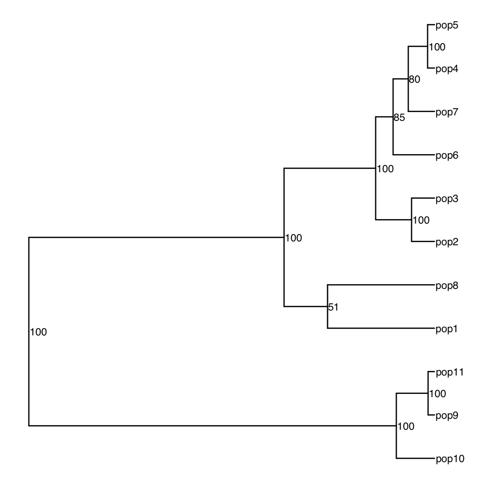

vignettes/fst_confidence_intervals.Rmd
fst_confidence_intervals.Rmdassigner::fst_WC84
During computation, the function first starts by keeping only the polymorphic markers in common between the populations.
When your project involves > 2 populations that evolved more by
neutral processes (e.g. genetic drift) than by natural selection,
filtering to keep only the markers in common between your populations
will drastically reduce the number of markers, and consequently your
genome coverage for the estimate. Strategically, you should reduce the
threshold of number of populations required to keep a marker (e.g. use a
minimum of 2 populations genotyped for the markers to keep it). This is
easily tested with radiator::filter_common_markers or in
stacks population module.
The overall fst and fis estimates will have reduce genome-wide coverage, because the computation is conducted with shared markers accross all your populations. However, for the pairwise comparisons, the markers will be tallied automatically for the pair. This usually results in more legitimate markers (i.e. less filtering bias) being used during computation, providing better genome-wide estimates for that pair.
if (!require("pak")) install.packages("pak")
pak::pkg_install("thierrygosselin/assigner")
library(assigner)
data.fst <- readr::read_tsv(file = "https://raw.githubusercontent.com/thierrygosselin/package_data/master/assigner_data_fst.tsv.gz")assigner::fst_WC84 first run: overall and pairwise, but
without boostrap (i.e. no confidence intervals). Get the function
documentation with: ??assigner::fst_WC84.
After 10 sec max you should get the Fst (overall) value of 0.05
fst:
names(fst)$:
$sigma.loc: the variance components per locus:
lsiga: among populations, lsigb: among
individuals within populations, lsigw: within
individuals.
$fst.markers: the fst by markers
$fst.ranked: the fst ranked
$fst.overall: the mean fst overall markers and
number of markers
$fis.markers: the fis by markers
$fis.overall: the mean fis overall markers and
number of markers
$fst.plot: the histogram of the overall Fst per
markers
$pairwise.fst: the pairwise fst in long/tidy data
frame and number of markers per pairwise comparison
$pairwise.fst.upper.matrix: the pairwise fst in a
upper triangle matrix
$pairwise.fst.full.matrix: the pairwise fst matrix
(duplicated upper and lower triangle)
$pairwise.fst.ci.matrix: matrix with pairwise fst in
the upper triangle and the confidence intervals in the lower
triangle.
df <- fst$pairwise.fstThe first 10 parwise comparisons in df
N_MARKERS: is the number of markers used between the pairs to calculate the Fst.
| POP1 | POP2 | FST | N_MARKERS |
|---|---|---|---|
| pop1 | pop2 | 0.0442 | 3457 |
| pop1 | pop3 | 0.0507 | 3457 |
| pop1 | pop4 | 0.0341 | 3457 |
| pop1 | pop5 | 0.0300 | 3457 |
| pop1 | pop6 | 0.0434 | 3457 |
| pop1 | pop7 | 0.0367 | 3457 |
| pop1 | pop8 | 0.0256 | 3457 |
| pop1 | pop9 | 0.0475 | 3457 |
| pop1 | pop10 | 0.0522 | 3457 |
| pop1 | pop11 | 0.0473 | 3457 |
The matrix with fst values:
# to see as a tibble:
fst.matrix <- tibble::as_tibble(fst$pairwise.fst.full.matrix, rownames = "POP")
# to keep matrix:
fst.matrix <- fst$pairwise.fst.full.matrixpairwise.fst.ci.matrix:fst$pairwise.fst.ci.matrix # you will get this:
[1] "confidence intervals not selected"fst_WC84, but this time
will ask for the confidence intervals and the heatmap:
fst.ci <- fst_WC84(data = data.fst,
pop.levels = c("pop1", "pop2", "pop3", "pop4", "pop5", "pop6", "pop7", "pop8", "pop9", "pop10", "pop11"),
pairwise = TRUE,
ci = TRUE,
iteration.ci = 100,
quantiles.ci = c(0.025, 0.975),
parallel.core = 12,
heatmap.fst = TRUE,
filename = "testing_fst",
verbose = TRUE
)`fst.ci$pairwise.fst` is the tibble with the Fst values and now with the confidence intervals.
fst.ci$pairwise.fst.ci.matrixpairwise.fst.ci.df:
pairwise.fst.ci.df <- tibble::as_tibble(fst.ci$pairwise.fst.ci.matrix, rownames = "POP")
# if you have numeric pop_id identifier you might have to do this to get proper column names:
colnames(pairwise.fst.ci.df) <- colnames(fst.ci$pairwise.fst.ci.matrix)
# to save:
readr::write_tsv(x = pairwise.fst.ci.df, path = "pairwise.fst.ci.df.tsv")For the next steps, we need the full distance matrix created in step 10.
# build the tree:
require(ape)
tree <- ape::nj(X = fst.matrix) # fst.matrix as a matrix
# for annotating bootstraps values on the tree:
bootstrap.value <- ape::boot.phylo(
phy = tree,
x = fst.matrix,
FUN = function(x) ape::nj(x),
block = 1,
B = 10000,
trees = FALSE,
rooted = FALSE
)
# to get percentage values
bootstrap.value <- round((bootstrap.value/10000)*100, 0)
bootstrap.value
# to include in the tree
tree$node.label <- bootstrap.value
require(stats)
tree <- ape::as.phylo(stats::hclust(stats::dist(fst.matrix), method = "average"))
bootstrap.value <- ape::boot.phylo(phy = tree, x = fst.matrix, FUN = function(xx) ape::as.phylo(stats::hclust(stats::dist(xx), method = "average")) , block = 1, B = 10000, trees = FALSE, rooted = TRUE)
bootstrap.value <- round((bootstrap.value/10000)*100, 0)
bootstrap.value
tree$node.label <- bootstrap.value
# get the latest development version of ggtree:
if (!require("ggtree")) install_github("GuangchuangYu/ggtree")
# If it's not working, use the Bioconductor version:
if (!requireNamespace("BiocManager", quietly = TRUE)) install.packages("BiocManager")
BiocManager::install("ggtree")Several vignettes are available to get to know ggtree
Build a very basic tree figure:
require(ggtree)
require(ggplot2)
tree.figure <- ggplot2::ggplot(tree, ggplot2::aes(x, y), ladderize = TRUE) +
ggtree::geom_tree() +
# geom_tiplab(size = 3, hjust = -0.05, vjust = 0.5)+ # for just the tip label
ggplot2::geom_text(ggplot2::aes(label = label), size = 3, hjust = -0.05, vjust = 0.5) + # for both tips and nodes
ggtree::theme_tree() +
ggplot2::xlim(0, 0.16) # to allocate more space for tip labels (trial/error)
tree.figure
ggplot2::ggsave(filename = "assigner.fst.tree.example.pdf", width = 15, height = 15, dpi = 600, units = "cm", useDingbats = FALSE)
Please send me suggestions and bug reports through github
References
Weir BS, Cockerham CC (1984) Estimating F-Statistics for the Analysis of Population Structure. Evolution, 38, 1358–1370.
G Yu, D Smith, H Zhu, Y Guan, TTY Lam, ggtree: an R package for visualization and annotation of phylogenetic tree with different types of meta-data. revised.